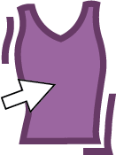
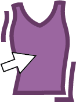
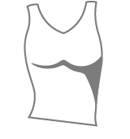
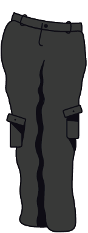

Welcome to Fashion Frenzy!
Click on the palette at the bottom to change the skin tone
Drag the clothes onto the model
Click each item to see more colours and try different combinations
Click the reset button at the bottom to clear your outfit and start again!





